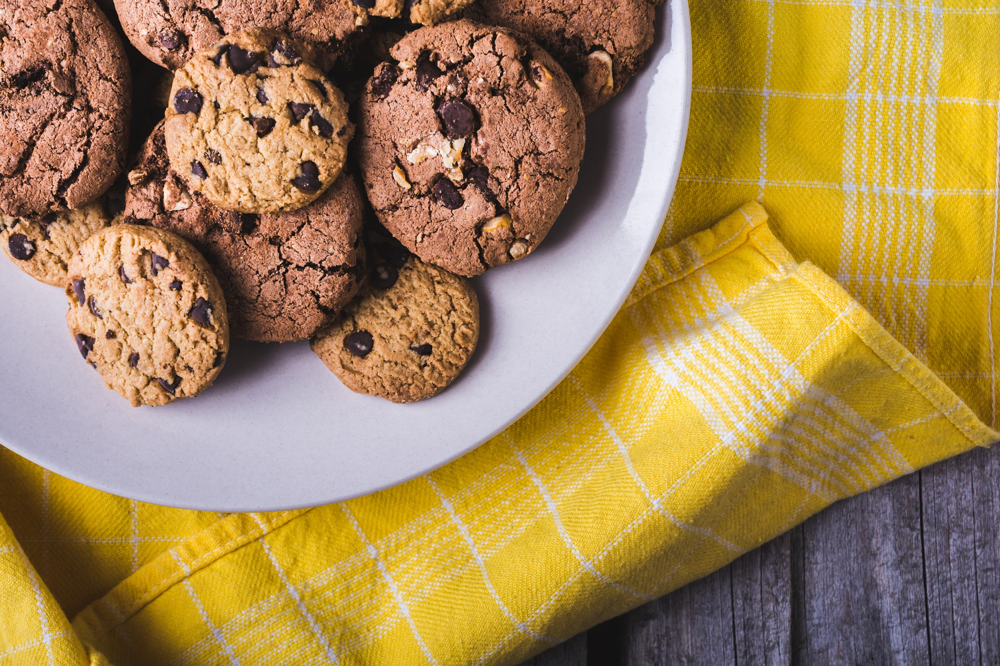

Galletas de Chocolate

Descripción
Esta famosa receta de galletas de chocolate clásica hará que la quieras preparar todos los días! Además, es muy fácil de hacer y no te tomará más de media hora si sigues los pasos a la perfección...
Así que, que esperas? Sígueme y en pocos pasos tendrás un postre digno de Odín! >:D
Ingredientes
- 200 Gramos de Harina de Trigo
- 50 Gramos de mantequilla
- 100 Gramos de Azúcar
- Un Huevo
- 250 gramos de chispas de Chocolate
- Una cucharadita de Levadura en polvo
- Una pizca de Polvo de Hornear
- Una cucharadita de Vainilla
- Una pizca de Sal
Pasos para la preparación
- Precalienta tu horno a 180° primero...
- En un recipiente de plástico vertir el mantequilla junto al Azúcar, tiene que mezclar hasta que note la mezcla homogénea, cuando llegue a ese punto puede parar y seguir con el siguiente paso de una vez...
- Ahora vas a proceder a integrar el huevo a la mezcla junto a la vainilla; esto hará que la mezcla ahora esté un poco más líquida, cuando notes que nuevamente ha salido homogénea es donde puedes parar y prepararte para el siguiente paso...
- Ya habiendo acabado con los ingrediente líquidos, es el turno de los ingredientes sólidos, te invito a incorporar en la mezclala cantidad correspondiente de Harina de Trigo con la ayuda de un colador para una mayor suavidad...
- Ya habiendo mezclado con la harina es momento de hechar el resto de ingredientes, como el polvo de hornear, la levadura en polvo y la pizca de sal
- A estas alturas tu mezcla debería estar lista... Salvoun detalle? Exacto! Las chispas de Chocolate, te invito a incorporarlas en la mezcla y mezclar hasta que notes que ninguna chispa sobre de la mezcla, que estén todas dentro...
- Ya teniendo la mezcla, faltaría meter las galletas en el horno, siempre depende del tipo de horno que tengas la cantidad de tiempo que necesitan las galletas para hacerse, pero lo que te recomiendo de un inicio es la espera de 10 minutos iniciales para comprobar su estado, si están crujientes obviamente es momento de sacarlas y esperar a que se enfríen para disfrutar de tus galletas!
- Espero que te haya gustado, te deseo lo mejor... :D